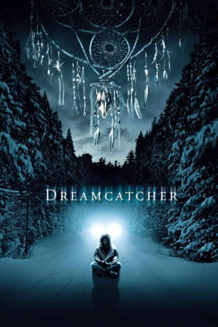

#7442 Dreamcatcher
 
 IMDB-Wertung: 5.5 / 10
IMDB-Wertung: 5.5 / 10  Tomatometer: 29
Tomatometer: 29  Metascore: 0
Metascore: 0 
Vier Freunde, die alle gemeinsam Träume lesen können, verabreden sich regelmäßig einmal im Jahr zu einem Jagdausflug in ihrer Heimat. Treffpunkt ist eine Waldhütte namens "Hole in the Wall". Alle versuchen ihre Probleme für ein Wochende zu vergessen.Doch die kleinen Alltagssorgen sind nichts, verglichen mit dem Horror, der die Ausflügler im tiefen Forst von Maine erwartet. Sie treffen einen Umbekannten dort im Wald, doch das ist nicht das Einzige, was sie dort erwartet, und gegen das müssen sie kämpfen, um die Welt vor der ewigen Verdammnis zu retten.
verschieben zu "X:\Person\Stephen King"
Jahr: 2003
Dauer: 133 Minuten
FSK: 16
Land: USA Studio: Warner Bros.Tonspuren: DTS - ,
Untertitel:
Auflösung: 1080p (1920x800) Größe: 10444 MB
Genre: Thriller, Horror, Drama, Sci-Fi
Regisseur:  Lawrence Kasdan
Lawrence Kasdan
Drehbuch: Stephen King
Soundtrack:
Darsteller:
 Morgan Freeman als Col. Abraham Curtis
Morgan Freeman als Col. Abraham Curtis Thomas Jane als Henry
Thomas Jane als Henry Jason Lee als Beaver
Jason Lee als Beaver Damian Lewis als Jonesy
Damian Lewis als Jonesy Timothy Olyphant als Pete
Timothy Olyphant als Pete Tom Sizemore als Owen
Tom Sizemore als Owen Donnie Wahlberg als Duddits
Donnie Wahlberg als Duddits Reece Thompson als Young Beaver
Reece Thompson als Young Beaver Giacomo Baessato als Young Jonesy
Giacomo Baessato als Young Jonesy- Joel Palmer als Young Pete
 Eric Keenleyside als Rick McCarthy
Eric Keenleyside als Rick McCarthy Rosemary Dunsmore als Roberta Cavell
Rosemary Dunsmore als Roberta Cavell Michael O'Neill als Gen. Matheson
Michael O'Neill als Gen. Matheson Campbell Lane als Old Man Gosselin
Campbell Lane als Old Man Gosselin C. Ernst Harth als Barry Neiman
C. Ernst Harth als Barry Neiman- Ingrid Kavelaars als Trish
 Ty Olsson als Army Truck Driver
Ty Olsson als Army Truck Driver Michael Daingerfield als Conklin
Michael Daingerfield als Conklin Kevan Ohtsji als Tracking Technician
Kevan Ohtsji als Tracking Technician- Dion Johnstone als EMT #2
- Shauna Kain als Josie Rinkenhauer
 Colin Lawrence als Edwards
Colin Lawrence als Edwards- Jordan Walker als Helicopter Sentry
- Jon Kasdan als Defuniak
 Michael Dobson als Stranger on Curb
Michael Dobson als Stranger on Curb Lance Kinsey als Hofferman , uncredited
Lance Kinsey als Hofferman , uncredited- Chad Rook als Soldier , uncredited
- Mikey Holekamp als Young Henry
- Andrew Robb als Young Duddits
- Darrin Klimek als Maples
- Chera Bailey als Rachel
- Alex Campbell als Richie Grenadeau
- T.J. Riley als Scottie
- Ryan DeBoer als Duncan
- Susan Charest als Becky
- Marcy Goldberg als EMT #1
- Malik McCall als Platoon Leader
- John Moore als Bad Driver
- Carolyn Tweedle als Woman in Crowd
- Christopher Ang als Apache Crewman #1
- Chris Duggan als Apache Crewman #2
- Daniel Merali als Apache Crewman #3
- Matt Riley als Apache Crewman #4
- John Armstrong als Detainee #1
- Jack Crowston als Detainee #2
- Trenna Frandsen als Detainee #3
- John Gagné als Detainee #4
- Sue Hartley als Detainee #5
- John Hombach als Detainee #6
- Kat Kosiancic als Detainee #7
Datei: X:\2003(A-F)\Dreamcatcher (2003, FSK16, 1920x800).mkv seit 10.11.2017
Festplatte: HD 2003-2004-2005(A-F)
 Es gibt insgesamt 26 Filme in der Gruppe '2003(A-F)'
Es gibt insgesamt 26 Filme in der Gruppe '2003(A-F)'